Short: Junk E-Mail Classifier.
Author: agmsmith@rogers.com (Alexander G. M. Smith)
Uploader: agmsmith@rogers.com (Alexander G. M. Smith)
Website: http://members.rogers.com/agmsmith/
Version: 1.77
Type: internet & network/e-mail
Requires: BeOS 5.0+
Related things: http://www.paulgraham.com/spam.html, http://radio.weblogs.com/0101454/stories/2002/09/16/spamDetection.html
Table of Contents
Introduction to AGMSBayesianSpam
AGMSBayesianSpam is a set of BeOS programs for classifying e-mail messages
and other text as either spam or genuine. "Spam" is the colloquial name for
unwanted junk messages, usually advertising. The name comes from a 1970's Monty Python comedy
skit involving lots of unwanted Spam, which is the name for the spicy ham
in a can made by the Hormel Foods company,
originally from Austin, Minnesota, USA. The program classifies messages as
spam or genuine (sometimes called "ham"), based on the words they contain and
previous messages which have been identified by the user as spam or genuine.
It's implemented as a server program (AGMSBayesianSpamServer) which keeps track
of the word list and a Mail Daemon Replacement add-on (AGMSBayesianSpamFilter)
which uses the server to classify incoming messages. Theoretically other
programs, like a news reader, could also use the word database using the
scripting interface. There's also a command line interface and a graphical
user interface.
If you want to know more about the technique of counting words, have a look
at Paul Graham's wonderful write-up at http://www.paulgraham.com/spam.html.
This program is currently using an improved version of Graham's method, called
Gary-combining, by Gary Robinson. See http://radio.weblogs.com/0101454/stories/2002/09/16/spamDetection.html for
Gary's story. There's also an even more improved method called Chi-Squared
(χ²) combining, which grew from discussions on the Spambayes
mailing list.
Installation
- Install the BeOS Mail Daemon Replacement (MDR) version 2.0.0 beta 7 or
later. Beta 3 and later include AGMSBayesianSpam so you don't need to
worry about incompatible versions, and the MDR will even do some of the
installation for you. You can get MDR from http://www.bebits.com/app/2289 or
get the latest source code and compile it yourself from http://sourceforge.net/projects/bemaildaemon.
- Move the AGMSBayesianSpamServer program to the
/boot/home/config/bin/ directory
(the MDR installer will do this for you). It's
put there to make it useable from the command line. If you use it
frequently, you can also add a symbolic link to it in your desktop
applications menu or to the mail menu.
- Move the AGMSBayesianSpamFilter mail add-on to the
/boot/home/config/add-ons/mail_daemon/inbound_filters/ directory
(the MDR installer will do this for you).
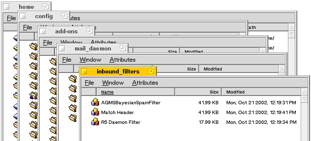
- 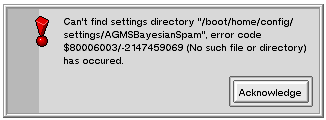Set up MIME types and indices (the
MDR installer will do this step and the next one for you, invisibly). Run
the AGMSBayesianSpamServer program. It will put up an alert box
complaining about not finding the settings file. Just hit the Acknowledge
button to get past it. Then click the "Install MIME Types & Make
Indices on All Drives" button which does what it says plus it also adds a
few sound effect names to the system.
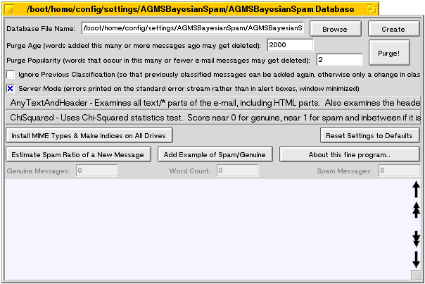
- Quit the program (the close box at the top left corner is one way of
doing that). It will make the settings file and settings directory
/boot/home/config/settings/AGMSBayesianSpam/ when it exits.
- Use the Sounds preferences (or the installsound command) to associate
the names with your sound files (SoundGenuine, SoundUncertain and SoundSpam
are included as examples with MDR in the /boot/home/config/settings/AGMSBayesianSpam/ directory), no I don't
have the rights to the Monty Python Spam skit). If you don't want it to
make sounds, don't do anything (you can also use the Sounds preferences
later on to disable or remove the sounds if you get tired of them).
![[Starting Sound Preferences]](pictures/StartingSoundPreferences.png)
![[Sound Preferences Choosing a File]](pictures/SoundPrefChoosingAFile.png)
When you're done, it should look something like this:
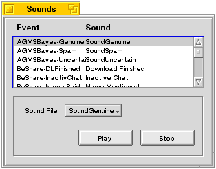
- Add some example messages to the database.
- If you don't want to do this, see step B. You need to add roughly the
same number of sample Spam messages as you add of genuine e-mail. A few
hundred of each should do, though you can get useful results with a dozen.
Run the AGMSBayesianSpamServer program again. This time it shouldn't
complain. Click the "Create" button to make a new database with the
default name of "/boot/home/config/settings/AGMSBayesianSpam/AGMSBayesianSpam Database".
Use the "Add Example of Spam/Genuine" button, and only select at most
80 files at a time (otherwise the Tracker/File Requester will lock up and
you'll have to reboot your computer). It will ask you to identify each
file as spam or genuine, you also have the choice of identifying a whole
batch of them as all spam or all genuine.
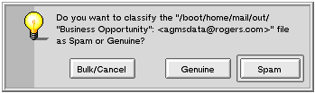
![[Multiple Message Classification Request]](pictures/MultipleMessageClassificationRequest.png)
You can also drag and drop example messages into the bottom half of
the window. Drop in the left side for genuine, right side for spam, but
avoid the middle third of the window.
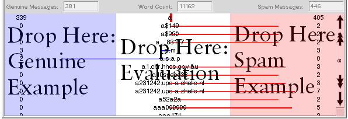
If you have thousands of messages, use the command line mode.
![[Command Line Set Spam]](pictures/CommandLineSetSpam.png)
- If you don't have a few hundred spam messages, instead of doing step
A copy the sample database file to "AGMSBayesianSpam Database" in the /boot/home/config/settings/AGMSBayesianSpam/ directory (the MDR
installer will do this for you). Due to complaints about the huge file
size, the sample spam database that comes with MDR is now very small
(10 spam, 10 genuine example messages), so you'll need to train it before
it gets accurate (auto-training is your friend). Or you could get the
huge (976KB, 484 spam, 1009 genuine messages) one from version 2.0.0 Beta
8, available at: http://cvs.sourceforge.net/cgi-bin/viewcvs.cgi/*checkout*/bemaildaemon/AGMSBayesianSpamServer/SampleDatabase?rev=release-2-0-0-beta8
![[Database File Location]](pictures/DatabaseFileLocation.png)
Run the AGMSBayesianSpamServer program again. Hit the Purge button
(because it doesn't load the database until it has to do something). If
things are working correctly, you should see a list of the words in the
sample database in the bottom half of the window. An alternative method
of picking a database file is to double click on it in Tracker, which is
useful if you don't want to type in the full name.
- Quit the AGMSBayesianSpamServer program. Delete all the remaining
files you unzipped from the archive (such as the example database, this
readme, this documentation, or source code), unless you want to
keep them around. You will have to decide where to store them; I can't
tell you everything :-).
- Start up the E-mail preferences control panel (part of the Mail Daemon
Replacement project).
![[Starting EMail Preferences]](pictures/StartingEMailPreferences.png)
Choose the e-mail account you wish to have checked for spam. Then hit the
Add Filter button to bring up the menu with the list of filters you can
add, and pick AGMSBayesianSpamFilter.
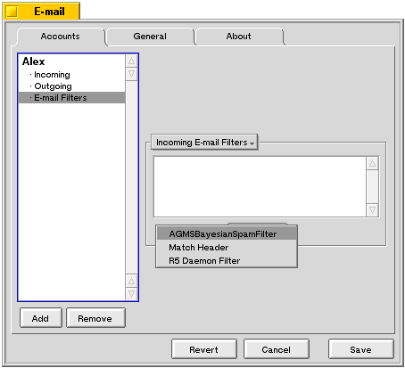
Remember to click on the filter after you have added it to set the settings
(though the defaults are useable too).
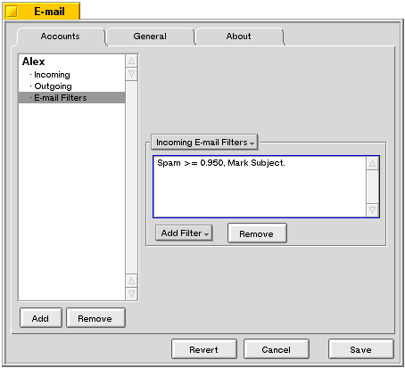
Then select the settings you wish. If you installed sound files earlier,
you can turn on the sound effects here.
![[Filter Settings]](pictures/FilterSettings.png)
- Test it. Send yourself some e-mail and see if it gets rated correctly.
Usage
Reading E-Mail
Check for e-mail as usual. If you look at the inbox directory in Tracker,
you can add an extra column with the E-mail attribute "Spam/Genuine Estimate"
to see how spammy the messages are. 0.0 means the system thinks the message is
fully genuine, 1.0 fully spam. But it can be wrong, for things like a friend
of yours quoting a spam message. For the Chi-squared method (the default), you
see numbers close to zero for genuine (like 9.750e-13), close to 1 for spam and
in-between (0.01 to 0.99) if it can't decide. With the Robinson scoring
method, usually if it is over 0.56 (the best cutoff value depends a bit on your
database quality, but 0.56 is typical) then it is spam, and the closer it is to
1.0 the more likely it really is spam.
I sort by spam ratio, and manually throw away the messages that are spammy,
then I switch the Tracker window back to sorting by thread+date (just a click
on the appropriate column title does it) and get on with reading the mail.
If you turned on the filter option to modify the subject, you'll see spam
messages with something like [Spam 95%] in front of the subject (I don't use it
because it looks ugly). But only in the Tracker display of the Subject, the
actual subject inside the message isn't affected, just the MAIL:subject
attribute, which is what the Tracker shows.
Training
The accuracy is only as good as your database, so update it with
more example spam and genuine messages. In particular, if it gets the estimate
wrong, add that message to the database to tell it what it should be doing. A
quick way to do that is to right click on the e-mail in Tracker, and pick Open
With... AGMSBayesianSpamServer.
![[Sorting Inbox By Spam Estimate]](pictures/SortingInboxBySpamEstimate.png)
It should start up and ask you if the message is spam or genuine.
You can also drag and drop the message into the left third of the word list for
genuine messages, or right third for spam messages. Dropping in the middle
third does something else that's mostly harmless and fun.
You may also want to train it with all your messages (it gives slightly
better results in the long run than just training on the mistakes). To make it
easier, turn on the self-training option in the mail filter. It will compute
the spam ratio of new mail messages, then feed back the same message into the
database as an example of spam/genuine. When it gets it wrong, you should
manually retrain it with the correct classification, otherwise the database
will get worse and worse and finally turn into mush.
Hiding the Server Window
If you're annoyed by the server window popping up whenver the system checks
for e-mail, you can tell it to hide. Just click the "Server Mode" checkbox.
Actually, that's now the default since people were complaining about the window
getting in the way. The disadvantage is that you don't get to see error
messages. To make it visible again, start up AGMSBayesianSpamServer (possibly
by double clicking on its icon in /boot/home/config/bin/ and bring up the
hidden window by using the deskbar, or by using the "Edit Server Settings"
button in the spam filter configuration).
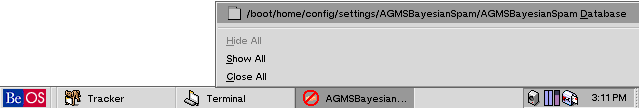
Alex's Settings
I'm currently using it with these settings: Chi-squared scoring,
AnyTextAndHeader tokenizing, server mode on, ignore previous classification
off, mark subject with [Spam %] off, spam cutoff 0.95, genuine below 0.05, no
words found on, self-training on, close AGMSBayesianSpamServer when Finished
on. Because of the self training, I always correct it when it gets the
classification wrong (that means I have to manually delete the messages, can't
use a Match Header filter to do it). My Tracker window shows the
Classification Group attribute rather than the Spam/Genuine Estimate number
(which isn't pretty when using Chi-squared).
Advanced Usage
Command Line Mode and Scripting
Besides the graphical user interface, there
is also a command line mode. Just type "AGMSBayesianSpamServer help"
in the terminal to get a list of the commands and what they do (the ultimate
documentation). It also explains all of the mysterious options you see in the
graphical user interface. The same commands can be used in scripting, either
from some other program or via the "hey" utility which you can get from http://www.bebits.com/app/2042. A
useful command, if you have a lot of spam messages to add, is
"AGMSBayesianSpamServer set genuine *" which will use all messages in the
current directory as examples of genuine text.
Sat Feb 8 16:30:51 274 /tmp>AGMSBayesianSpamServer help
AGMSBayesianSpamServer - A Spam Database Server
Copyright © 2002 by Alexander G. M. Smith. Released to the public domain.
Compiled on Feb 8 2003 at 11:13:28. $Revision: 1.11 $ $Header:
/cvsroot/bemaildaemon/AGMSBayesianSpamServer/AGMSBayesianSpamServer.cpp,v 1.77
2003/01/22 03:19:48 agmsmith Exp $
This is a program for classifying e-mail messages as spam (junk mail which
you don't want to read) and regular genuine messages. It can learn what's
spam and what's genuine. You just give it a bunch of spam messages and a
bunch of non-spam ones. It uses them to make a list of the words from the
messages with the probability that each word is from a spam message or from
a genuine message. Later on, it can use those probabilities to classify
new messages as spam or not spam. If the classifier stops working well
(because the spammers have changed their writing style and vocabulary, or
your regular correspondants are writing like spammers), you can use this
program to update the list of words to identify the new messages
correctly.
The original idea was from Paul Graham's algorithm, which has an excellent
writeup at: http://www.paulgraham.com/spam.html
Gary Robinson came up with the improved algorithm, which you can read about at:
http://radio.weblogs.com/0101454/stories/2002/09/16/spamDetection.html
Then he, Tim Peters and the SpamBayes mailing list developed the Chi-Squared
test, see http://mail.python.org/pipermail/spambayes/2002-October/001036.html
for one of the earlier messages leading from the central limit theorem to
the current chi-squared scoring method.
Thanks go to Isaac Yonemoto for providing a better icon.
Usage: Specify the operation as the first argument followed by more
information as appropriate. The program's configuration will affect the
actual operation (things like the name of the database file to use, or
whether it should allow non-email messages to be added). In command line
mode it will do the operation and exit. In GUI/server mode a command line
invocation will just send the command to the running server. You can also
use BeOS scripting (see the "Hey" command which you can get from
http://www.bebits.com/app/2042 ) to control the Spam server. And finally,
there's also a GUI interface which shows up if you start it without any
command line arguments.
Commands:
Quit
Stop the program. Useful if it's running as a server.
Get DatabaseFile
Get the pathname of the current database file. The default name is something
like B_USER_SETTINGS_DIRECTORY / AGMSBayesianSpam / AGMSBayesianSpamServer
Database
Set DatabaseFile NewValue
Change the pathname of the database file to use. It will automatically be
converted to an absolute path name, so make sure the parent directories exist
before setting it. If it doesn't exist, you'll have to use the create command
next.
Create DatabaseFile
Creates a new empty database, will replace the existing database file too.
Delete DatabaseFile
Deletes the database file and all backup copies of that file too. Really only
of use for uninstallers.
Count DatabaseFile
Returns the number of words in the database.
Set Spam NewValue
Adds the spam in the given file (specify full pathname to be safe) to the
database. The words in the files will be added to the list of words in the
database that identify spam messages. The files processed will also have the
attribute MAIL:classification added with a value of "Spam" or "Genuine" as
specified. They also have their spam ratio attribute updated, as if you had
also used the Evaluate command on them. If they already have the
MAIL:classification attribute and it matches the new classification then they
won't get processed (and if it is different, they will get removed from the
statistics for the old class and added to the statistics for the new one).
You can turn off that behaviour with the IgnorePreviousClassification
property. The command line version lets you specify more than one pathname.
Count Spam
Returns the number of spam messages in the database.
Set SpamString NewValue
Adds the spam in the given string (assumed to be the text of a whole e-mail
message, not just a file name) to the database.
Set Genuine NewValue
Similar to adding spam except that the message file is added to the genuine
statistics.
Count Genuine
Returns the number of genuine messages in the database.
Set GenuineString NewValue
Adds the genuine message in the given string (assumed to be the text of a
whole e-mail message, not just a file name) to the database.
Set IgnorePreviousClassification NewValue
If set to true then the previous classification (which was saved as an
attribute of the e-mail message file) will be ignored, so that you can add the
message to the database again. If set to false (the normal case), the
attribute will be examined, and if the message has already been classified as
what you claim it is, nothing will be done. If it was misclassified, then the
message will be removed from the statistics for the old class and added to the
stats for the new classification you have requested.
Get IgnorePreviousClassification
Find out the current setting of the flag for ignoring the previously recorded
classification.
Set ServerMode NewValue
If set to true then error messages get printed to the standard error stream
rather than showing up in an alert box. It also starts up with the window
minimized.
Get ServerMode
Find out the setting of the server mode flag.
Flush
Writes out the database file to disk, if it has been updated in memory but
hasn't been saved to disk. It will automatically get written when the program
exits, so this command is mostly useful for server mode.
Set PurgeAge NewValue
Sets the old age limit. Words which haven't been updated since this many
message additions to the database may be deleted when you do a purge. A good
value is 1000, meaning that if a word hasn't appeared in the last 1000
spam/genuine messages, it will be forgotten. Zero will purge all words, 1
will purge words not in the last message added to the database, 2 will purge
words not in the last two messages added, and so on. This is mostly useful
for removing those one time words which are often hunks of binary garbage, not
real words. This acts in combination with the popularity limit; both
conditions have to be valid before the word gets deleted.
Get PurgeAge
Gets the old age limit.
Set PurgePopularity NewValue
Sets the popularity limit. Words which aren't this popular may be deleted
when you do a purge. A good value is 5, which means that the word is safe
from purging if it has been seen in 6 or more e-mail messages. If it's only
in 5 or less, then it may get purged. The extreme is zero, where only words
that haven't been seen in any message are deleted (usually means no words).
This acts in combination with the old age limit; both conditions have to be
valid before the word gets deleted.
Get PurgePopularity
Gets the purge popularity limit.
Purge
Purges the old obsolete words from the database, if they are old enough
according to the age limit and also unpopular enough according to the
popularity limit.
Get Oldest
Gets the age of the oldest message in the database. It's relative to the
beginning of time, so you need to do (total messages - age - 1) to see how
many messages ago it was added.
Set Evaluate NewValue
Evaluates a given file (by path name) to see if it is spam or not. Returns
the ratio of spam probability vs genuine probability, 0.0 meaning completely
genuine, 1.0 for completely spam. Normally you should safely be able to
consider it as spam if it is over 0.56 for the Robinson scoring method. For
the ChiSquared method, the numbers are near 0 for genuine, near 1 for spam,
and anywhere in the middle means it can't decide. The program attaches a
MAIL:ratio_spam attribute with the ratio as its float32 value to the file.
Also returns the top few interesting words in "words" and the associated
per-word probability ratios in "ratios".
Set EvaluateString NewValue
Like Evaluate, but rather than a file name, the string argument contains the
entire text of the message to be evaluated.
ResetToDefaults
Resets all the configuration options to the default values, including the
database name.
InstallThings
Creates indices for the MAIL:classification and MAIL:ratio_spam attributes on
all volumes which support BeOS queries, identifies them to the system as
e-mail related attributes (modifies the text/x-email MIME type), and sets up
the new MIME type (text/x-vnd.agmsmith.spam_probability_database) for the
database file. Also registers names for the sound effects used by the
separate filter program (use the installsound BeOS program or the Sounds
preferences program to associate sound files with the names).
Set TokenizeMode NewValue
Sets the method used for breaking up the message into words. Use "Whole" for
the whole file (also use it for non-email files). The file isn't broken into
parts; the whole thing is converted into words, headers and attachments are
just more raw data. Well, not quite raw data since it converts
quoted-printable codes (equals sign followed by hex digits or end of line) to
the equivalent single characters. "PlainText" breaks the file into MIME
components and only looks at the ones which are of MIME type text/plain.
"AnyText" will look for words in all text/* things, including text/html
attachments. "AllParts" will decode all message components and look for words
in them, including binary attachments. "JustHeader" will only look for words
in the message header. "AllPartsAndHeader", "PlainTextAndHeader" and
"AnyTextAndHeader" will also include the words from the message headers.
Get TokenizeMode
Gets the method used for breaking up the message into words.
Set ScoringMode NewValue
Sets the method used for combining the probabilities of individual words into
an overall score. "Robinson" mode will use Gary Robinson's nth root of the
product method. It gives a nice range of values between 0 and 1 so you can
see shades of spaminess. The cutoff point between spam and genuine varies
depending on your database of words (0.56 was one point in some experiments).
"ChiSquared" mode will use chi-squared statistics to evaluate the difference
in probabilities that the lists of word ratios are random. The result is very
close to 0 for genuine and very close to 1 for spam, and near the middle if it
is uncertain.
Get ScoringMode
Gets the method used for combining the individual word ratios into an overall
score.
ProcessArgs: The property specified isn't known or doesn't support the requested action (usually means it is an unknown command), error code $FFFFFFFF/-1 (General OS error) has occured.
AGMSBayesianSpamServer shutting down...
Sat Feb 8 16:30:58 275 /tmp>
Using a Spreadsheet to Examine Word Statistics
Another advanced trick is to load the list of words into Gobe Productive's
spreadsheet, so that you can find the most popular word or chart the word
frequencies. Unfortunately it can only handle about 16000 words. To do that,
start up Gobe Productive, pick Open, then from the file requester's "Document
Type" menu, pick "Spreadsheet" and then in the submenu pick "Tab-delimited
text". Then navigate to the database, the default location is "/boot/home/config/settings/AGMSBayesianSpam/AGMSBayesianSpam Database".
Have fun!
Understanding and Using the Word Display
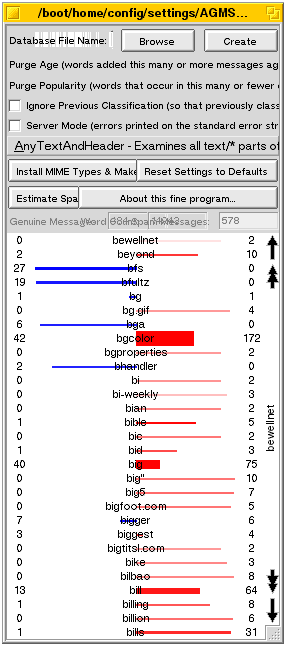The word display tells you more than you
need to know about the words in the database. Those colour bars actually mean
something.
Obviously words which are more genuine than spamish show up in blue, while spammier words are in red. It's proportionally based on the total message counts
so that a word which shows up in 10% of the genuine messages and 9% of the spam
will show up in blue, even if it was in more spam messages than genuine
messages (this compensates a bit for not training on an equal number of spam
and genuine messages). The length of the bar shows the ratio of the
proportions; further to the left for larger genuine proportions, and similarly
further right for larger spam proportions.
The thickness of the bar shows how many messages the word was found in.
It's kind of a weight, saying how frequently used that word is and thus how
significant it is.
The paleness of the bar shows you how old that word is. A light colour
means that the word was last added to the database long ago. A darker, more
saturated colour means that the word was added more recently, when you added
example messages to the database.
Finally, if you click on the word display, the background will change from a
pale blue tint into solid white, to show you that it is the active keyboard
focus. That means you can type in letters to find a particular word (delay for
one second to start typing the letters for a new word). The arrow keys, page
up/down keys and the mouse scroll wheel also show you different words. Sorry,
there's no scroll bar since finding the Nth word is a slow operation with a set
of words (they aren't numbered); each twitch of the scroll bar would mean going
through the list of tens or even hundreds of thousands of words and counting to
find the scroll position.
Tokenizing Modes Compared
I did some tests with tokenizing different parts of mail messages to see
what would work best.
The Database:
341 training genuine messages, 406 training spam messages (or 398 when
parsing due to a bug (fixed later on in 2.0.0b5) with messages that don't have
body text).
40 test genuine messages, 40 test spam messages, all more recent than the
training ones.
Spam threshold is 0.56, Gary-combining method.
The results:
| Tokenizing Method
| Genuine Test Details
| Genuine Accuracy
| Spam Test Details
| Spam Accuracy
|
|---|
| Just headers
| Genuine .181352 to .557881, one false positive (a mailbox full announcement).
| 2.5% wrong.
| Spam .450602 to .750511, 21 false negatives.
| 52.5% wrong.
|
| Whole raw message text
| Genuine .163027 to .627022, 3 false positives.
| 7.5% wrong.
| Spam .509355 to .993985, 1 false negative.
| 2.5% wrong.
|
| Message parsed into parts plus header
| Genuine .168857 to .609005, 4 false positives.
| 10% wrong.
| Spam .614564 to .994364, 0 false negatives.
| 0% wrong.
|
| Message parsed into parts, no header data
| Genuine .220161 to .631161, 5 false positives.
| 12.5% wrong.
| Spam .592501 to .994444, 0 false negatives.
| 0% wrong.
|
| Any text parts and header
| Genuine .162697 to .614136, 4 false positives.
| 10% wrong.
| Spam .614973 to .994362, 0 false negatives.
| 0% wrong.
|
| Any text parts, no headers
| Genuine .221923 to .635487, 6 false positives.
| 15% wrong.
| Spam .594271 to .994441, 0 false negatives.
| 0% wrong.
|
| text/plain parts (including body text)
| Genuine .137869 to .583192, 3 false positives.
| 7.5% wrong.
| Spam .448059 to .994119, 17 false negatives.
| 42.5% wrong.
|
Only text/plain sub-parts, no headers.
150 spam and 1 genuine training message had no words!
| Genuine .219169 to .696899, 9 false positives.
| 22.5% wrong.
| Spam .660755 to .994116, 0 false negatives, 27 had no words.
| 0% wrong.
|
The results look good for the whole message tokenizing method (which also
works on non-email files) and for the all text parts plus header. Since the
text parts method doesn't add lots of garbage words to the database from trying
to find words in binary attachments, it's now the default setting.
The header only method is pretty good too for identifying genuine messages,
and so-so for spam messages. That may make it useable for pre-download tests
(delete some of the spam on the mail server before downloading it, without
worrying about deleting too many genuine messages).
High Speed and High Danger - Headers Only Trick
If you have a slow dial-up connection, you may wish to classify your mail
quickly by deleting spam messages without downloading the entire junk message.
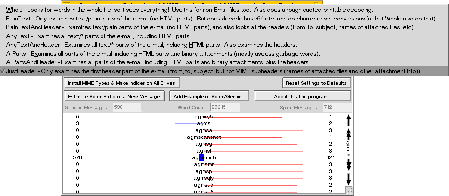
![[Dangerous Match Filter]](pictures/DangerousMatchFilter.png) This can be done with three
settings. First switch the AGMSBayesianSpamServer into tokenizing just the
headers. Then go into the E-mail preferences and add an
AGMSBayeisianSpamFilter with the "Add [Spam %] in Front of Subject" option
turned on, and the ratio set to a nice safe high level like 0.95 (so that your
genuine mail is less likely to get deleted, but it will still delete the 1% of
your real mail that looks like spam, which is why this is dangerous). Do not
turn on self-training, since you can't manually correct it. Finally in the
E-mail preferences, add a "Match Header" filter after the spam filter and set
it so that If Subject is \[Spam* then Delete Message.
That's backslash, left square bracket, Spam with the S capitalised, asterix.
Now it will download the headers, check them against the spam database, and
then delete the spam ones on the server without downloading the rest of their
contents.
This can be done with three
settings. First switch the AGMSBayesianSpamServer into tokenizing just the
headers. Then go into the E-mail preferences and add an
AGMSBayeisianSpamFilter with the "Add [Spam %] in Front of Subject" option
turned on, and the ratio set to a nice safe high level like 0.95 (so that your
genuine mail is less likely to get deleted, but it will still delete the 1% of
your real mail that looks like spam, which is why this is dangerous). Do not
turn on self-training, since you can't manually correct it. Finally in the
E-mail preferences, add a "Match Header" filter after the spam filter and set
it so that If Subject is \[Spam* then Delete Message.
That's backslash, left square bracket, Spam with the S capitalised, asterix.
Now it will download the headers, check them against the spam database, and
then delete the spam ones on the server without downloading the rest of their
contents.
You should also make a new spam database trained in Just Headers tokenizing
mode with roughly equal examples of your genuine messages and spam messages (50
of each should be enough to start). A full message database may also work, but
headers only training should be more accurate for headers only decisions. When
testing JustHeader mode, I noticed that the false positive rate (genuine
reported as spam) is nice and low, but the false negative rate (spam reported
as genuine) is high (tested with Robinson scoring, not Chi-Squared scoring).
So this means JustHeader mode will delete maybe half the spam (and download the
rest) and also delete the occasional genuine message.
Change Log
The various versions released to the public. These are actually several
accumulated minor changes, which you can see by looking at the log in the top of the
source code files.
- Version 1.77 changed the tokenizing to not convert words to lower case,
the case is important for spam! Minimize the window before opening it so
that it doesn't flash on the screen in server mode. Also load the database
when the window is displayed so that the user can see the words.
- Version 1.73 added self training support and the Chi-Squared scoring
method.
- Version 1.68 nothing significant changed. Just very minor tweaking.
- Version 1.65 added a time delay for exiting the program. This is so that
multiple e-mail accounts can simultaneously download mail, without having the
server close when one of the accounts finishes downloading. Scripting
requests that come in while it is counting down to quitting time will cancel
the countdown. In the belt and suspenders department, the filter has
been enhanced to try starting up the server up to three times.
- Version 1.60 got rid of the need to use a modified Inbox filter for MDR
(found out the correct way of setting attributes on a message), added sound
effects, and added parsing of mail messages (parsing MIME headers, decoding
base64, quoted-printable and converting character sets to UTF-8 for text, all
thanks to using the MDR mail kit, which you now need since it uses their
libmail.so code library). There are now new options for selecting what kind
of parsing to do (text/plain or text/* or */* attachments, with or without
headers, etc). Plus sound effect options. The sample database has also been
updated to use text/* plus headers tokenization, which makes it slightly
smaller.
- Version 1.49 switched to Gary Robinson's method for calculating spam
ratios. The overall results are about the same but you have less false
positives and the numbers are spread more evenly between 0.0 and 1.0 than
with Paul Graham's method (change the E-mail preferences filter setting
cutoff point to 0.56, adjust as needed). Also, as "jaf" requested, you can
now drag and drop messages into the word list - drop in the left third to use
it as an example of genuine messages, right third for spam, and middle third
to get an evaluation of a message's spaminess. Also a useless command was
removed. Updated files (replace your existing copies): AGMSBayesianSpam
Database, AGMSBayesianSpamFilter, AGMSBayesianSpamServer.
- Version 1.47 was the first public (and working) version. It used Paul
Graham's algorithm with a few simplifications.
Released to the public domain in 2002 by the author, Alexander G. M. Smith.